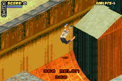
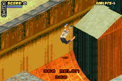

Tony Hawk's Pro Skater 4

Complete on 2018-6-7
3 / 5
Release Date: Oct 28, 2002
Meta Score: 85
Screenshots
 

Notes
Tony Hawk is a famous professional skater. His most well known feat is being the first person to land a 900, that is a 2.5 rotation spin on a skatboard. The Tony Hawk's Pro Skater series is a big and long running series of skateboarding video games, starting on the PS1 and continuing on.
This is one of several GBA adaptations, and five of them made the list. This one, of course, adapts THPS4. The game has survived the transition reasonably well, but you'd be better off playing a home console or PC version.
The gameplay is a reasonable port of the home version: skate around, do tricks strung together into combos to score points. The main area it has suffered is the lack of buttons on the GBA leading to some awkwardness that took a bit to get used to (e.g. R is both flip trick in the air and revert on landing).
There's no story in this one, but unlike earlier games you don't just skate with a time limit to get a high score and complete goals. Instead you explore the levels and find people who give you individual objectives to do. I never liked this about THPS4, it seemed like the awkward middle child between the earlier games' pure arcade gameplay and the later games' actual story mode. Also in this version it's a pain to find the goal givers as they look just like other random NPCs until you get close and the prompt appears.
Goals themselves are ok, some are the usual (high/sick/pro score, find skate letters), and some of the new ones are interesting. Some can be a bit janky though.
Graphics are decent but not stellar, trying to look realistic on the GBA as usual puts me off. The one problem is that the isometric viewpoint can be confusing and it can be hard to tell if things are close to the camera or high up or in the background etc. I usually had to just skate around a level for a while bouncing off stuff to understand what was going on.
Overall, again not a terrible port but inferior to home versions. I'm interested to see if any of the other Tony Hawk's GBA games are different.